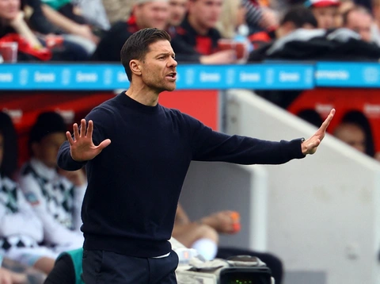

- Real Madrid theo mô hình “CLB thành viên” — tức là các thành viên (members) của CLB là chủ sở hữu chứ không phải một ông chủ tư nhân.
- Đội vẫn giữ nguyên mô hình này dù có những tin tức gần đây rằng CLB đang cân nhắc thu hút vốn đầu tư bên ngoài (với phần vốn nhỏ) qua một công ty con — nhằm hiện đại hóa và tăng sức cạnh tranh tài chính.
- Ban lãnh đạo hiện tại đứng đầu bởi Florentino Pérez — người có ảnh hưởng rất lớn tới hướng đi, thương vụ và chiến lược của CLB trong nhiều năm gần đây.
- Hiện tại — huấn luyện viên trưởng của Real Madrid là Xabi Alonso. Huấn luyện viên hay nhất trong lịch sử Real Madrid được phần lớn chuyên gia và người hâm mộ đánh giá là Zinedine Zidane.
